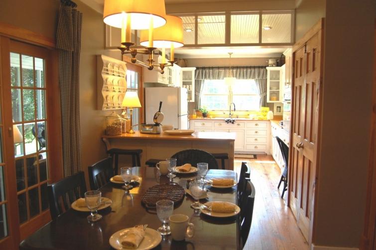

.png)
.PNG)
.PNG)
.PNG)
.PNG)
.PNG)
.JPG)
.JPG)
.PNG)
.PNG)


If you were patient enough to suffer through the ugly photographs in Part 1 of this post, you may read on ahead. If you missed Part 1, please go back and read it so that the changes will make sense to you. Yes, I am being bossy. (The photo below is not my kitchen. It was my inspiration for the changes we made.)
Country Living House of the Year
There was one other photograph that I forgot to mention that was also helpful in this redo phase. I wanted the same color scheme found in Ina Garten’s barn kitchen.
Barefoot Contessa’s Barn
I left you with a list of 3 problems we had to deal with in thinking about removing the wall between the dining room and the kitchen…basically, a change in flooring that wouldn’t match, a change in ceiling finishes, and the loss of a much needed pantry. And all I gave you for suffering through the ugly photos was half of a photo of a transom and that inspiration picture from Country Living magazine. Shame.on.me.
The Country Living kitchen made me realize that we could handle the change in ceiling materials by simply putting up the transom between the two spaces. So that is exactly what my husband did. He removed the pantry, knocked down the wall, and built the transom across the space. One problem solved.
Here’s your view from the newly opened up dining room through the kitchen (finally 🙂 )
Let me just say, you cannot imagine how happy this light-obsessed girl was when the first opening was broken through in that wall, and I could see all the way from our great room through the dining room space and out the kitchen window!
Now for handling the other problems: There was enough room on the right hand side of the dining room to build a new pantry. All the shelves and the double doors were reused in the new one.
For the flooring problem, I came up with the idea of building an island or bar or whatever it’s called, to cover the change in flooring (and it gave me more storage space – yippee!) My husband designed and built it with some suggested “wishes” from me.
 So now that you’ve got the “big picture” of the space, let me just walk you around the room. The photograph looking through the dining room above was taken a year or so ago. The rest of these are more recent. (I just didn’t have a recent one that showed the transom and the pantry to include here.) You might notice a few other changes from the first post if you are real observant…the light fixtures have been changed; the board and batten trim was removed from the dining room walls; the chairs have been replaced with schoolhouse chairs, and I have hung and painted a plate rack.
So now that you’ve got the “big picture” of the space, let me just walk you around the room. The photograph looking through the dining room above was taken a year or so ago. The rest of these are more recent. (I just didn’t have a recent one that showed the transom and the pantry to include here.) You might notice a few other changes from the first post if you are real observant…the light fixtures have been changed; the board and batten trim was removed from the dining room walls; the chairs have been replaced with schoolhouse chairs, and I have hung and painted a plate rack.
Hmm…after looking at these photos, I may paint that plate rack back white or at least find some more interesting plates to put there. It looks kind of blah here.
Here’s a little closer look at the upper side that you saw in the first photograph from part 1 of the post where my daughter was sitting on the counter.
Then here is a better look at the window over the sink.
I took down the red and cream plaid drapes at the window and replaced them with black and white linen ones that I made. The cream in the plaid just did not work well with the white cabinets. Another change was my husband made little “feet” that we added to the bottom of the cabinets to give them more of a “furniture feel,” and also we removed the two upper cabinet doors on either side of the sink. I have contemplated putting a linen skirt in place of the 2 cabinet doors below the sink but have not quite sold myself on it yet.
Continuing on around the room….
Here is a view of the other side of the room…
and finally the kitchen desk area.
This is not a real big house. In fact, I would call it cottage-like. The kitchen is not a huge one, but the size works perfectly for us. In the first house we built, our kitchen was very large, and the island in the middle of it was big enough to have a party around! I decided when we built this one, that I did not want to have to keep such a large room clean…major job! So this kitchen is about half the size of our previous one, but our screened porch is more than double the size of our former one! I really do believe that our needs change as we go through life, and our homes should fit our needs. This kitchen suits us just fine for now. 🙂
Hope you enjoyed the little tour around the room!
If you have any questions, I’ll be more than happy to try to answer them.


.PNG)
Love, love your kitchen. I am downsizing and going back to white appliances. Please tell me the white you painted the cabinets. Also what brand of appliances and where did you get the chandelier over the table. Thanks. So much.
I love the curtains in your house – did you make them yourself or did you have them professionally made for you???:-)
cheers from down under.
Hi there!! I have been following your blog for a while and I love the transformation pictures. I laugh because I too have gone through stages of my “house style”. From cherry wood fancy to cream/beige/black cottage. I just received a huge compliment the other day which made my heart sing. I hosted a HOUSEFUL of senior high girls for a bible study group. One of the girls went home and told her mama she loved our house and when she has a home of her own she wants it to be as comfortable and welcoming as mine…….LOVE THAT! For so long I have not hosted things as I felt as though my house was too small. I have thrown that thought out the window and decided making memories are more important! We are a military family and are due to retire in 2 years. We have planned to build in Mississippi. I LOVE the look of your house. Do you know where you found the floor plan? I would love any info you could give. Keep bloggin, I am a fan!
———————————————————————-
Jennifer – I would consider the “comfortable and welcoming” comment the highest of compliments! That’s exactly what a home should be in my mind. You are right that making memories is the important thing. Besides, small can be warm and cozy when it comes to parties. 🙂 Thank you for your kind words about the house. Our plan is the Lakeside Cottage plan from Southern Living, but we modified the layout considerably – moved the porch, one of the bedrooms, and the kitchen, but it still maintained the exterior styling. So glad you are a fan. Please do come back to visit!
Kelly
Your kitchen is lovely! I especially love the plate rack, the cabinets and the large window over the sink. I hope to add beadboard to our backsplash one of these days. We also have white appliances and had the choice to go with stainless. For some reason I just couldn’t do it.
———————————————————————-
Aw Elizabeth thank you! I’m so glad you liked the kitchen. It’s not a big one, but it is very family oriented (and lately messy a lot with summer here!) I couldn’t make myself go with the stainless when I had the opportunity to either. Don’t laugh, but I even tried holding up aluminum foil in the place of the oven to see if I would like it (couldn’t think of any other way to “see” it in my mind!). The white just blends in so well with the cabinetry. Hope you get your beadboard backsplash!
Thank you so very much for stopping by to read my post and to leave your kind words. I really appreciate it.
Kelly
LOVE your kitchen. i’m a sucker for a white kitchen, that’s for sure! i’m saving inspiration photos for my own kitchen redo and your photos are going in my file!
————————————————————————
Marie, thank you soooo much! I love white kitchens too. If you go back 2 posts from this one, there is an entire one dedicated to white kitchens if you want to see more. Glad my pictures could help give you some ideas.
Thank you for reading AND leaving your sweet comments!
Kelly
So beautiful, Kelly!!! I really love your kitchen 🙂
————————————————————————-
Thank you Lindsay!
Kelly
You are so lucky to have a husband who can do this kind of stuff! Love the changes you made. Father Tim’s Lemonade-Is this from the Jan Karon series? I loved those books!
———————————————————————
Susan I knew my husband was a keeper the very first day I met him…it just took 10 years to convince him he liked me! LOL. Seriously, I don’t know what I would do if he couldn’t knock down and build things…I’d probably have to take classes.gulp. Glad you liked the changes to the kitchen.
YES Father Tim’s lemonade is from the Mitford books – my all time favorites. Weren’t they wonderful? I miss being in Mitford!
Kelly
How awesome that you were able to open up your kitchen like that! I cannot wait to work on my kitchen, it is really the heart of the home and if you don’t LOVE it, then something has to change! Your kitchen is lovely!
————————————————————————–
Taking down that wall made all the difference in the world, Melissa! It just opened it up so much, and what is even better is that in the winter I can be cooking in the kitchen and still see the fire in the fireplace in the greatroom. That wasn’t possible before with the wall there.
I love your blog! Thank you for reading my post here and leaving such sweet words. Please come back again.
Kelly
Wow Kelly! I really love your kitchen! I could go on and on about the charming details, the wonderful woodworking skills of your husband and oh that desk area! I also really like your black plate rack as it sets off the curtains nicely! Thanks so much for sharing! (I think your kitchen is the perfect size, as well)
———————————————————————-
Oh Kim! I’m so happy to be able to pass along a compliment to my husband! He is very talented (but such a perfectionist it takes him f o r e v e r to finish a project.) I did paint the plate rack black to bring out the curtains just like you said. Thank you for stopping by here and leaving your sweet words!
Kelly
Kelly,
It looks so great! i have those same bar stools! My favorite is your little area by the sink! LOVE! The little pots of herbs, the eggs 🙂 So cute! Oh and I love your kitchen decorated for Christmas, gorgeous!!
xo
Lyss
————————————————————————-
Lyss, so glad you liked the kitchen! Those herbs come in handy in cooking – especially the basil when the tomatoes are ripe and the mint in my iced tea. My husband and I have talked about putting a window box just for herbs outside the kitchen window…maybe one day. I love the kitchen at Christmas too!
Kelly
Kelly!!! This is the definition of cozy. I love the warmth of this space, and all the thought that went behind each little detail. The framed black and whites, the plate rack, and the jars with scoopers are such beautiful touches. Thanks for the inspiration (I do love my kitchen, but I think it needs a little more coziness). Great job. 🙂
————————————————————————-
Aimee, thank you so much for your thoughtful words, but YOUR kitchen is gorgeous – totally classic! I love using black and white photos in every room, but I especially like these in the kitchen. They are all of the children on their birthdays – often blowing out the candles on their birthday cake. (I thought kids and cake were appropriate for a kitchen. 🙂 )
Kelly